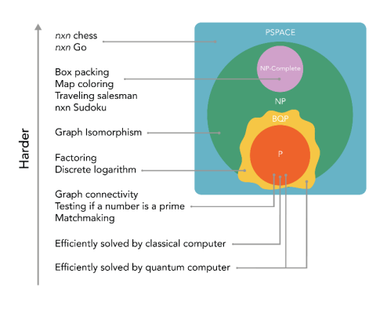

مسائل كمية متعددة الحدود محدودة الخطأ (bounded-error quantum polynomial time)
وكما جاء سابقاً من تصنيفات المسائل الحسابية فإننا نعلم أنه وضع للحاسوب الكمومي تصنيف جديد للمسائل الحسابية وهو مسائل كمية متعددة الحدود محدودة الخطأ (BQP) هذه هي الأشياء التي يمكن للكمبيوتر الكمومي - جهاز كمبيوتر يتمتع بقوة إضافية من التراكب والتشابك والتداخل - حلها في وقت متعدد الحدود بأقل من مقدار معين من الخطأ

مساحة متعددة الحدود PSPACE : تركز هذه الفئة على موارد الذاكرة لا وقت. PSPACE هي فئة مشاكل القرار التي يمكن حلها من قبل البعض الخوارزمية التي يمكن أن يحدها إجمالي استخدام المساحة ، في جميع الحالات ، كثير الحدود في حجم المثيل.
وقت متعدد الحدود الاحتمالي للخطأ المحدود BPP : هي فئة مشاكل القرار التي يمكن حلها بواسطة آلة تورنج الاحتمالية في زمن متعدد الحدود ، مع احتمال خطأ يبلغ 1/3 على الأكثر لجميع الحالات.
معلومة
آلة تورنج Turing machine هي عبارة جهاز يعامل مجموعة من الرموز المصفوفة على شريط وفق مجموعة من القواعد. سميت بهذا الإسم نسبة لعالم الرياضيات الإنكليزي آلان تورنگ الذي أوجد هذا النموذج سنة 1937م الذي وصفها بالآلة التلقائية automatic machine.
أن حدود مسائل كمية متعددة الحدود محدودة الخطأ (BQP) عبارة عن خط ضبابي. يقع هذا الخط بين BPP و PP ، بما في ذلك بعض (لكن من غير الواضح كم) من NP ، وبعض الأشياء خارج NP.
يمكن لحاسوب كمي به خطأ محدود (اي السيطرة على المشاكل الحالية مثل الضوضاء ) أن يحل جميع أنواع المشكلات في P و BPP في وقت متعدد الحدود. يمكن أن يحل بعض أنواع المشاكل NP في وقت متعدد الحدود ، مع اعتبار التحليل عبر خوارزمية شور (Shor's Algorithm) بمثابة المثال الأكثر شيوعًا. ليس من الواضح ما إذا كان بإمكانه حل أي شيء بكفاءة في فئة NP-Complete أم لا - لكن الباحثين يشكون في أنه لا يمكنه ذلك. هناك الكثير غير مثبت حول كيفية ارتباط فئات التعقيد ببعضها البعض ، و BQP هي فئة أخرى من التعقيد لم يتم تحديد حدودها بدقة.
ومع ذلك ، ليس كل شيء ضبابيًا تمامًا ، ونعلم أن BQP أقوى من BPP. وتم اثبات ان BQP يتضمن بعض أنواع المشكلات خارج NP ، تقنيًا ، خارج فئة التعقيد الأكبر PH. يصعب على الكمبيوتر الكلاسيكي إيجاد حلول لأنواع المشكلات في تلك الفئة أو التحقق منها.
هذا يعني أنه حتى ايجاد اثبات بأن P = NP ، ستظل هناك أنواع مشكلات BQP لا يستطيع الكمبيوتر الكلاسيكي حلها. وهنا يتفوق الحاسوب الكمي عن الحاسوب الكلاسيكي في حل المسائل الحسابية المعقدة.